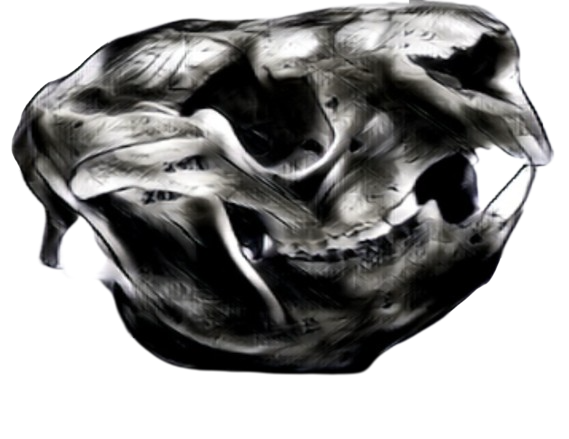

A grumpy koala
The skull of the koala
A helmet
Koalas are riddled with chlamydia. In some areas the infection rate is 80% or higher. This statistic isn't helped by the fact that one of the few other activities koalas will spend their precious energy on is rape. Despite being seasonal breeders, males seem to either not know or care, and will simply overpower a female regardless of whether she is ovulating. If she fights back, he may drag them both out of the tree, which brings us full circle back to the brain: Koalas have a higher than average quantity of cerebrospinal fluid in their brains. This is to protect their brains from injury... should they fall from a tree. An animal so thick it has its own little built in special ed helmet. I fucking hate them.
In conclusion: Koalas are stupid, leaky, disease-ridden sex offenders. But, hey. They look cute. If you ignore the terrifying snake eyes and terrifying feet.